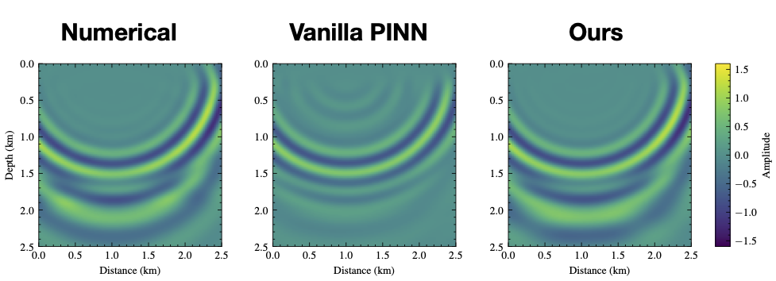
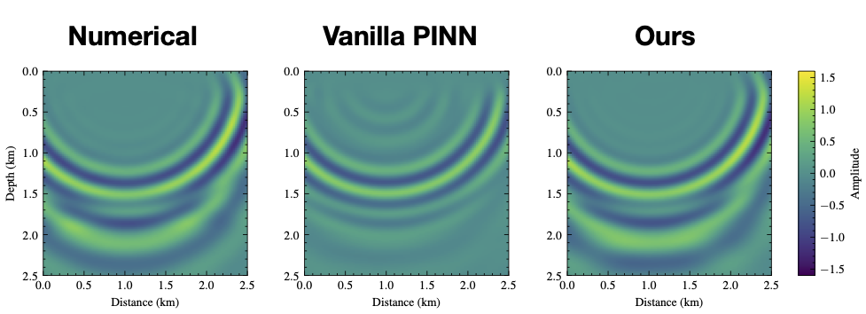
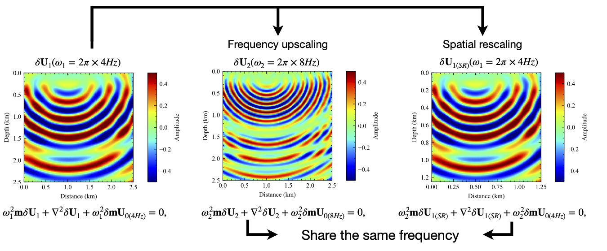

Physics-informed neural networks (PINNs) can offer approximate multidimensional functional solutions to the Helmholtz equation that is flexible, requires low memory, and has no limitations on the shape of the solution space. However, the neural network (NN) training can be costly, and the cost dramatically increases as we train for multifrequency wavefields by adding frequency as an additional input to the NN multi- dimensional function. In this case, the often large variation of the wavefield features (specifically wavelength) with frequency adds more complexity to the NN training. Thus, we propose a new loss function for the NN multidimensional input training that allows us to seamlessly include frequency as a dimension. We specifically utilize the linear relation between frequency and wavenumber (the wavefield space representation) to incorporate a reference frequency scaling to the loss function. As a result, the effective wavenumber of the wavefield solution as a function of frequency remains almost stationary, which reduces the learning burden on the NN function. We demonstrate the effectiveness of this modified loss function on a layered model.

It is obvious that, with one more input dimension, the representation of NNs for the wavefield becomes harder to obtain via conventional training. On the other hand, our proposed loss function provided reasonable results considering the larger (four) dimensional space, and we obtain a much more accurate amplitude and phase representation of the wavefield. We also calculated the velocity models from the PINN predictions using \ref{srl}. We can observe that the PINN with our proposed loss function reconstructs the details of the velocity model much better than the vanilla method.
Transforming the multifrequency wavefield into time-domain records could help us understand better what parts of the wavefield we managed to predict accurately in time. Using inverse Fourier transform, we obtain time-domain snapshots for the numerical implementation, the conventional PINN, and our proposed PINN of the multifrequency wavefield representation. Fig. 7 shows the time-domain snapshot at 1.0 s transformed from 3- to 8-Hz wavefields with a frequency interval of 0.2 Hz. We observe that the time-snap shot obtained by the model trained with a single reference frequency loss function shows more agreement with the numerical result compared to the vanilla multifrequency loss function, specifically the key reflection corresponding to the high-velocity perturbation at 2.0 km.
If you found the paper useful, please cite it via:
X. Huang and T. Alkhalifah, "Single Reference Frequency Loss for Multifrequency Wavefield Representation Using Physics-Informed Neural Networks," in IEEE Geoscience and Remote Sensing Letters, vol. 19, pp. 1-5, 2022, Art no. 3007105, doi: 10.1109/LGRS.2022.3176867.
@article{huang2022PINNref,
author={Huang, Xinquan and Alkhalifah, Tariq},
journal={IEEE Geoscience and Remote Sensing Letters},
title={Single Reference Frequency Loss for Multifrequency Wavefield Representation Using Physics-Informed Neural Networks},
year={2022},
volume={19},
pages={1-5},
doi={10.1109/LGRS.2022.3176867}}